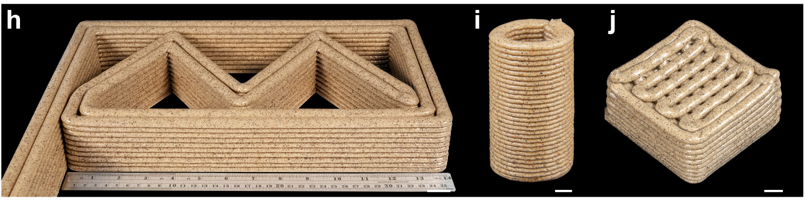
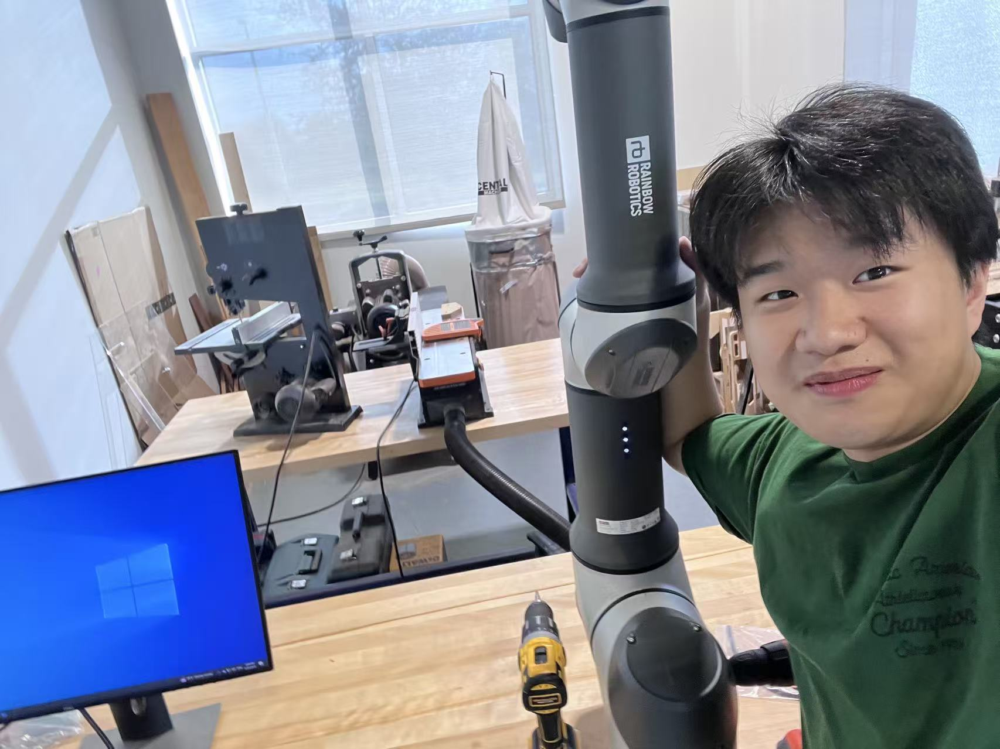
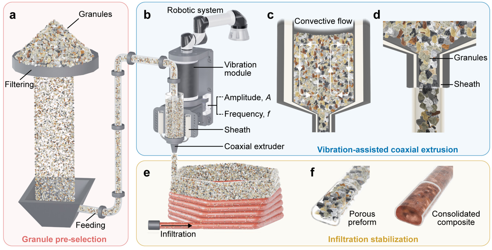
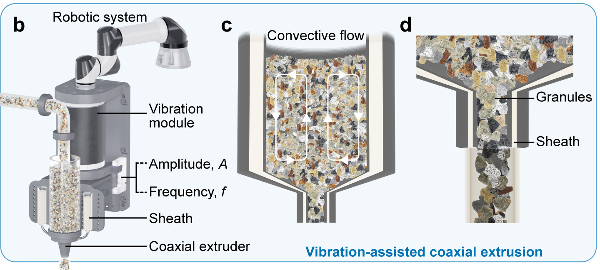
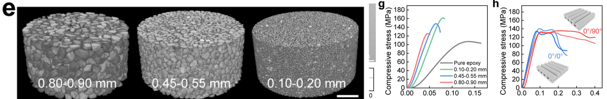
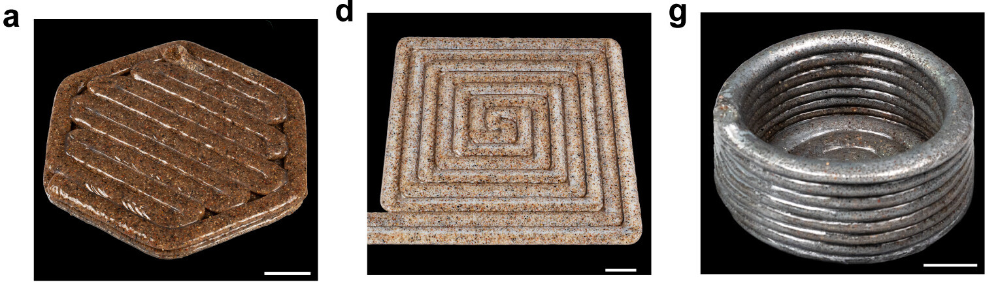

Mechanical Engineering Portfolio
Shing Kai Lai
Mechanical Engineer focused on robotics, additive manufacturing, and AI.
I design, build, program, and validate robotic manufacturing systems—from mechanical hardware and material processing to motion control and engineering validation.
Selected Project
Vibration-Assisted 3D Printing for In-Space Construction

Developed a vibration-assisted coaxial extrusion process for printing raw granular materials into large-scale structures. Controlled vibration regulates particle flow, a printable sheath stabilizes deposition, and post-print infiltration consolidates the porous preform.
Research output Co-authored “Vibrational 3D Printing of Granular Materials Toward In-Space Construction”, submitted to Advanced Materials.
My Contributions
From material preparation to robotic fabrication
- Prepared epoxy-based printable materials using a Thinky ARV-310P planetary mixer, centrifuge, and pneumatic dispensing equipment.
- Collaborated on a multi-outlet coaxial printhead using SolidWorks, SLA prototyping, and CNC machining.
- Generated MATLAB toolpaths and programmed a three-axis dispensing robot and a Rainbow Robotics RB16-900 six-axis robotic arm.
- Supported large-format fabrication and evaluated printed composites using mechanical testing and X-ray micro-CT.
Hands-on Evidence
Built, programmed, and tested in the lab
These short demonstrations show the benchtop printing process, coordinate-driven robotic motion, and my direct work with the manufacturing platform.





About
I build physical systems and make them work.
I am currently pursuing a Master of Mechanical Engineering at Rice University after earning my bachelor’s degree in Aerospace Engineering from the Hong Kong University of Science and Technology.
My experience spans mechanical design, additive manufacturing, robotics, material characterization, and AI-driven engineering. I enjoy taking projects from CAD and experimental planning through fabrication, programming, troubleshooting, and testing.